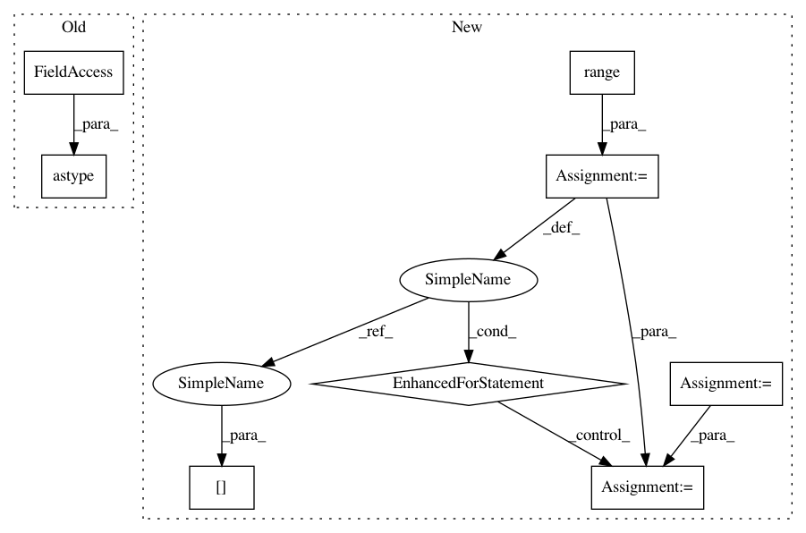

e8a8edec508fcf886d5c6329ff0729b1cff845e8,hicexplorer/utilities.py,,exp_obs_matrix_norm,#Any#Any#Any#,287
Before Change
data_type = type(pSubmatrix.data[0])
expected = expected_interactions_in_distance_[distance]
pSubmatrix.data = pSubmatrix.data.astype(np.float32)
pSubmatrix.data /= expected
pSubmatrix.data = convertInfsToZeros_ArrayFloat(pSubmatrix.data).astype(data_type)
return pSubmatrix
After Change
expected_interactions_in_distance = expected_interactions_norm(pLength_chromosome, pChromosome_count, pSubmatrix)
row_sums = np.array(pSubmatrix.sum(axis=1).T).flatten()
total_interactions = pSubmatrix.sum()
row, col = pSubmatrix.nonzero()
// data = pSubmatrix.data.tolist()
for i in range(len(row)):
expected = expected_interactions_in_distance[np.absolute(row[i]-col[i])]
expected /= row_sums[row[i]] * row_sums[col[i]] / total_interactions
pSubmatrix.data[i] /= expected
return pSubmatrix
def toString(s):
In pattern: SUPERPATTERN
Frequency: 3
Non-data size: 8
Instances
Project Name: deeptools/HiCExplorer
Commit Name: e8a8edec508fcf886d5c6329ff0729b1cff845e8
Time: 2018-09-04
Author: wolffj@informatik.uni-freiburg.de
File Name: hicexplorer/utilities.py
Class Name:
Method Name: exp_obs_matrix_norm
Project Name: deeptools/HiCExplorer
Commit Name: e8a8edec508fcf886d5c6329ff0729b1cff845e8
Time: 2018-09-04
Author: wolffj@informatik.uni-freiburg.de
File Name: hicexplorer/utilities.py
Class Name:
Method Name: exp_obs_matrix_norm
Project Name: scikit-image/scikit-image
Commit Name: a346268a461ef2a403ed8e8da6e9e446c741e75b
Time: 2017-10-25
Author: jni.soma@gmail.com
File Name: skimage/measure/_moments.py
Class Name:
Method Name: moments_normalized
Project Name: nipy/dipy
Commit Name: 0da323fc9e612174fd05d5bc59a0fd6e8c4a5da9
Time: 2013-12-13
Author: mauro.zucchelli88@gmail.com
File Name: dipy/reconst/tests/test_shore_metrics.py
Class Name:
Method Name: test_shore_metrics